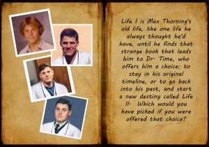

From the journal
Thought-provoking review of "Life II" by J. Thomas Beaton
See website http://jthomasbeaton.weebly.com/4/post/2013/05/life-ii-by-scot-spotson.html for full review!
A unique and interesting story about time travel which refreshingly was not so much about the “science” of time travel as it is about the people involved. At the beginning of the story Max Thorning (protagonist) discovers a benign alien that has come to earth to study time and who have the Science to enable one to go back in time and re-experience their lives. Very much like The Butterfly Effect movies one cannot bring anything with them in a physical sense as only the consciousness moves back in time. And unlike the Back to the Future concept of time travel one cannot move forward in time as of course it has not occurred yet and is not likely to be the same any longer.
Max, father of two children and in a seemingly loveless marriage recklessly travels back in time to live his life again from the age of 16, set on changing as much as he can that he sees as wrong with his life for the better.
The focus of the book, increasingly in the later chapters, is of the difficulty Max Thorning has in living with his decisions to leave his loved ones behind from his first life, his guilt at doing so and his gradual descent towards madness as well as his tendency to assert his reality from the first time line onto persons around him in his second life despite this not being applicable. For me these were the best parts of the book evoking thoughtful consideration on the concept of changing past decisions and actions and the way they have played out to my current present.
A book well worth reading.
A unique and interesting story about time travel which refreshingly was not so much about the “science” of time travel as it is about the people involved. At the beginning of the story Max Thorning (protagonist) discovers a benign alien that has come to earth to study time and who have the Science to enable one to go back in time and re-experience their lives. Very much like The Butterfly Effect movies one cannot bring anything with them in a physical sense as only the consciousness moves back in time. And unlike the Back to the Future concept of time travel one cannot move forward in time as of course it has not occurred yet and is not likely to be the same any longer.
Max, father of two children and in a seemingly loveless marriage recklessly travels back in time to live his life again from the age of 16, set on changing as much as he can that he sees as wrong with his life for the better.
The focus of the book, increasingly in the later chapters, is of the difficulty Max Thorning has in living with his decisions to leave his loved ones behind from his first life, his guilt at doing so and his gradual descent towards madness as well as his tendency to assert his reality from the first time line onto persons around him in his second life despite this not being applicable. For me these were the best parts of the book evoking thoughtful consideration on the concept of changing past decisions and actions and the way they have played out to my current present.
A book well worth reading.

